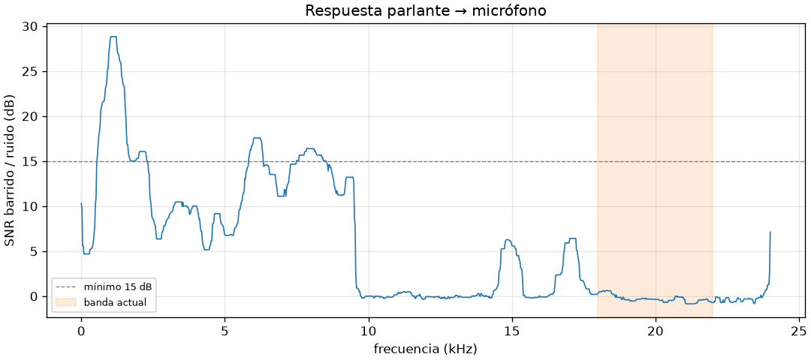
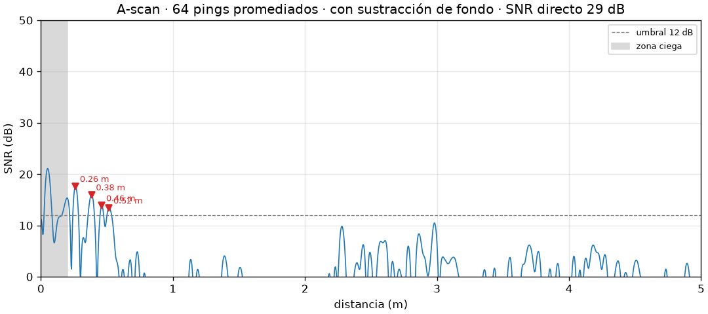
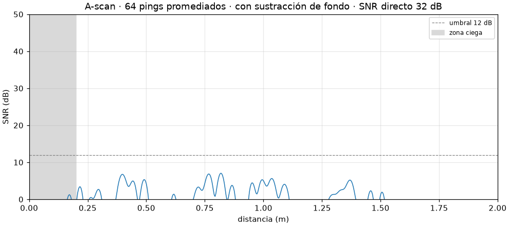
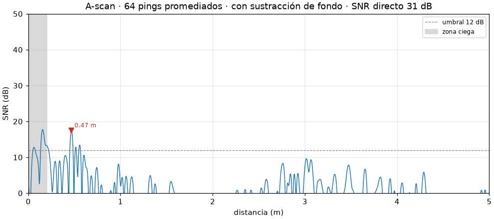
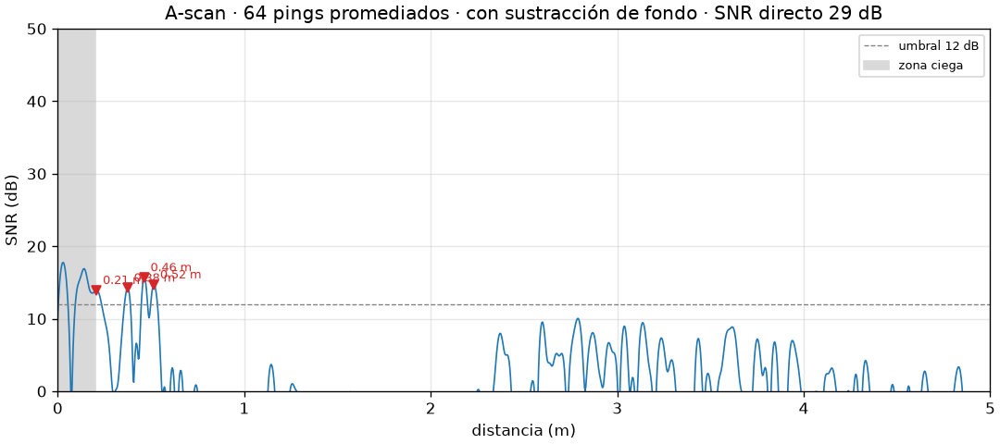
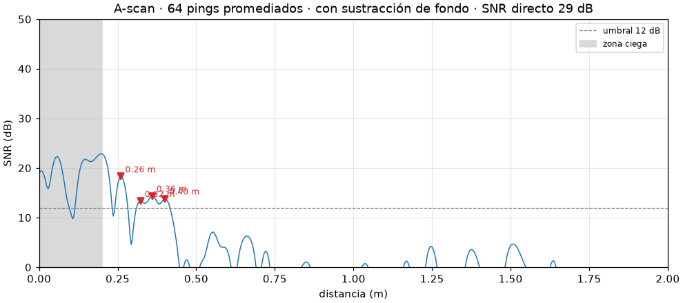
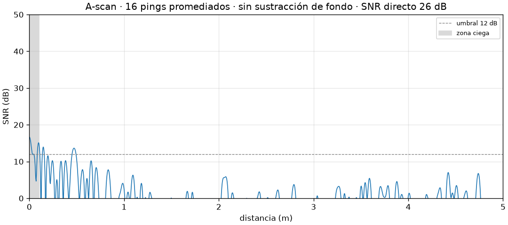
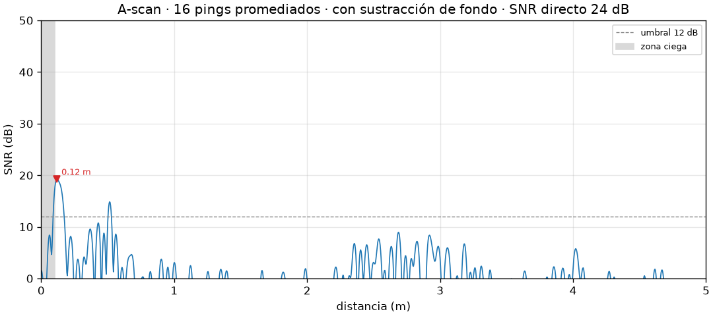

Un sonar real con el parlante y el micrófono de tu laptop
Inspirado en el sonar de The Dark Knight, pero honesto sobre sus límites. Emite chirps por el parlante, graba los ecos con el micrófono integrado y mide la distancia a las superficies por tiempo de vuelo, con filtro adaptado, promediado coherente y detección CFAR. Esta guía documenta todo: la teoría, cómo instalarlo, cada decisión de diseño, los fallos que encontramos en hardware real y cómo los resolvimos, para que cualquiera pueda replicarlo.
Qué es y qué logra
Un murciélago grita y escucha. Este proyecto hace lo mismo con piezas que ya tienes: el parlante emite un chirp (un barrido de frecuencia corto), el sonido rebota en una pared o un objeto, y el micrófono graba el eco. Como el sonido viaja a ~343 m/s, cada milisegundo de retraso equivale a ~17 cm de distancia (ida y vuelta).
📡 Mide distancias
Lista de ecos con distancia, retardo y SNR. Salida en tabla o JSON.
📈 Visualiza
A-scan (perfil de eco), modo en vivo con waterfall y radar polar girando el equipo a mano.
🩺 Se autodiagnostica
Mide la respuesta en frecuencia de tu hardware y recomienda la banda que sí funciona.
🧪 Probado sin hardware
Un simulador acústico permite correr 88 tests con latencia aleatoria, ruido, clipping y fallos de buffer.
🛡️ Seguro por diseño
Tope de amplitud que el adaptador de audio verifica antes de reproducir cualquier cosa.
🧭 Errores accionables
Cada fallo dice qué pasó y cómo resolverlo, con instrucciones por sistema operativo.
El casi-ultrasonido (18–22 kHz) a alto volumen molesta a perros y gatos y puede dañar los
tweeters de parlantes pequeños. La amplitud digital por defecto es baja (0.1) y hay un tope duro
(--max-amplitude, por defecto 0.5). Mantén moderado el volumen del sistema. La banda audible
(2–8 kHz u 8–16 kHz) se oye como un "tic" agudo: es molesto, no peligroso.
Con un solo micrófono sólo hay distancia, no dirección. No "ve a través de paredes" ni reconstruye imágenes 3D como en la película. Ver limitaciones.
Requisitos
Hardware
- Laptop con parlante y micrófono integrados
- Tapa abierta (cerrada apaga el mic)
- Opcional: cinta métrica para validar
Software
- Python ≥ 3.11
- uv (gestor de entornos)
- Linux:
libportaudio2
Ambiente
- Cuarto silencioso, sin ventilador ni A/C
- Pared plana y dura a 0.5–2 m
- Nada blando cerca (cortinas, sofás)
Versiones con las que se verificó esta documentación
| Componente | Versión | Rol |
|---|---|---|
| Python | 3.12.10 | Intérprete |
| numpy | 2.5.4 | Arrays, FFT |
| scipy | 1.18.1 | Filtros, correlación, Hilbert, Welch, CFAR |
| matplotlib | 3.11.2 | A-scan, live, radar polar |
| sounddevice | 0.5.6 | PortAudio: reproducir y grabar con el mismo reloj |
| typer (+ rich) | 0.27.3 | CLI y tablas en terminal |
| pytest · hypothesis | grupo dev | Tests unitarios y de propiedades |
Plataforma de pruebas reales: Windows 11 en una laptop ASUS ROG/TUF con audio Realtek y Armoury Crate.
Paso a paso: de cero a tu primer eco
Marca cada paso al terminarlo; tu progreso se guarda en este navegador.
Instala uv y Python
uv crea el entorno virtual e instala las dependencias exactas fijadas en uv.lock.
powershell -ExecutionPolicy ByPass -c "irm https://astral.sh/uv/install.ps1 | iex"
curl -LsSf https://astral.sh/uv/install.sh | sh
# Sólo Linux: la librería nativa de audio
sudo apt install libportaudio2Obtén el código e instala dependencias
git clone https://github.com/ruiiz-dev/batman.git
cd batman
uv sync # crea .venv con dependencias + pytest/hypothesis
uv run sonar --helpDeberías ver la ayuda con los comandos devices, diagnose, calibrate, ping, live y sweep.
Corre los tests para confirmar que la cadena funciona
Los tests no usan tu micrófono: alimentan el código real con un simulador acústico. Si pasan, cualquier fallo posterior es del hardware o del sistema operativo, no del software.
uv run pytest
# si pytest no puede escribir en la carpeta temporal del sistema:
uv run pytest --basetemp=.pytest_tmp........................................................................ [ 81%]
................ [100%]
88 passed in 9.68sPrepara el sistema operativo
Todo el "procesamiento inteligente" de voz del sistema está diseñado para eliminar exactamente lo que queremos medir: sonidos que salen del parlante y vuelven al micrófono.
- Desactiva mejoras de audio: Configuración → Sistema → Sonido → (dispositivo) → Mejoras de audio: Desactivado. Haz lo mismo en el parlante.
- Apps de "cancelación de ruido con IA" (Armoury Crate, Nahimic, NVIDIA Broadcast, Krisp…): apágalas.
- Permiso de micrófono: Privacidad y seguridad → Micrófono → permitir apps de escritorio.
- Cierra Zoom, Discord, Teams y pestañas del navegador que usen el micrófono.
- Volumen del sistema moderado (~50 %).
"Cancelación de ruido con IA bidireccional" deshabilita el micrófono físico y deja sólo un
micrófono virtual. Al apagarla tuvimos que rehabilitarlo a mano: Win+R →
mmsys.cpl → Grabación → clic derecho → "Mostrar dispositivos deshabilitados" → Habilitar, y luego quitarle el mute.
Identifica tus dispositivos
uv run sonar devices
Verás cada dispositivo una vez por host API (MME, DirectSound, WASAPI, WDM-KS en Windows), con canales y tasas de muestreo soportadas. Busca el micrófono integrado y los parlantes integrados bajo WASAPI y anota una parte única de su nombre.
Los índices cambian cuando conectas un monitor o audífonos. --input "Varios micr" --host-api WASAPI
es estable; --input 14 no.
Diagnostica la respuesta de tu hardware
Graba 2 s de ruido ambiente, reproduce un barrido de 1 kHz a ~23 kHz y calcula el SNR por frecuencia. Te dice qué banda usar y te imprime el comando exacto.
uv run sonar --host-api WASAPI --exclusive --input "Varios micr" --output "Altavoces (Realtek" diagnose --plot respuesta.png
uv run sonar diagnose --plot respuesta.png

Monta la escena
- Nada entre el equipo y el objetivo. Superficies a menos de 15 cm caen en la zona ciega.
- No muevas el equipo entre calibrar y medir.
- Tú también eres un reflector: aléjate o quédate detrás del equipo.
Calibra el fondo
Graba todo lo estático (el sonido que viaja por el chasis, el camino directo, la mesa, la tapa) para restarlo después. Hazlo en la posición de medida, apuntando a espacio libre.
uv run sonar --host-api WASAPI --exclusive --input "Varios micr" --output "Altavoces (Realtek" ^ --f-start 2000 --f-end 8000 --amplitude 0.5 --pings 64 --interval-ms 150 calibrate
Se guarda en .sonar/background.npz junto con una huella de la configuración (fs, banda, chirp,
ventana, intervalo). Si cambias alguno de esos parámetros, ping rechazará el perfil y te pedirá recalibrar.
En PowerShell el salto de línea es ` (acento grave) en vez de ^; en bash es \. O escríbelo todo en una línea.
Tu primer ping
Pon el objetivo delante y mide. Las opciones globales van antes del comando.
uv run sonar --host-api WASAPI --exclusive --input "Varios micr" --output "Altavoces (Realtek" ^ --f-start 2000 --f-end 8000 --amplitude 0.5 --pings 64 --interval-ms 150 ping --plot ascan.png
Ecos (c = 343.2 m/s, 64 pings, resolución 2.9 cm)
┏━━━┳━━━━━━━━━━━━━━━┳━━━━━━━━━━━━━━┳━━━━━━━━━━┓
┃ # ┃ distancia (m) ┃ retardo (ms) ┃ SNR (dB) ┃
┡━━━╇━━━━━━━━━━━━━━━╇━━━━━━━━━━━━━━╇━━━━━━━━━━┩
│ 1 │ 0.260 │ 1.515 │ 18.4 │
└───┴───────────────┴──────────────┴──────────┘Útiles: --json para scripts, --show para abrir la gráfica, --save-raw rec.npy para
guardar la grabación cruda y re-analizarla después, --no-background para ver la escena sin restar el fondo.
Valida con una cinta métrica y corrige el sesgo
Mide la distancia real y compárala. Si el error es constante (siempre ~4 cm de menos, por ejemplo), es la separación parlante–micrófono: el eco recorre parlante→objeto→micrófono, no 2·d exactos. Corrígelo:
# distancia = (c·Δt + direct_path) / 2 → un sesgo de −4 cm sugiere ~0.08 m
uv run sonar ... --direct-path 0.08 pingModo en vivo
uv run sonar ... --pings 4 live # menos pings = refresca más rápidoArriba el A-scan actual, abajo un waterfall (cada fila es una medición; el tiempo baja). Acerca y aleja una carpeta dura: verás una línea diagonal. Los errores transitorios (SNR bajo, clipping) aparecen en la ventana sin cortar el loop. Cierra la ventana o Ctrl+C para salir.
Radar polar a mano
uv run sonar ... sweep --out sweep.png --show
Gira el equipo a un ángulo, escribe el ángulo (p. ej. -30, 0, 30) y Enter para medir.
Enter vacío termina y dibuja un gráfico polar: ángulo × distancia, color = SNR, punto rojo = eco más fuerte.
Si llegaste aquí tienes un sonar funcional. Comparte tus resultados (modelo de laptop + salida de diagnose):
ver cómo reportar tu hardware.
Cómo leer un A-scan

| Elemento | Qué significa |
|---|---|
| Eje X | Distancia en metros desde el equipo (ya dividida entre 2: es ida, no ida y vuelta). |
| Eje Y | SNR en dB: cuánto sobresale la señal sobre el ruido estimado. |
| Franja gris | Zona ciega (--min-range): el eco se solapa con el camino directo; no se busca ahí. |
| Línea punteada | Umbral global --min-snr (12 dB). Debajo, nada se reporta. |
| Triángulos rojos | Ecos detectados (pasan umbral global, umbral local CFAR y rechazo de lóbulos laterales). |
| Título | Pings promediados, si se restó fondo, y SNR del camino directo (salud de la medición: >20 dB es bueno). |
Regla práctica: un eco real se mueve cuando mueves el objeto. Si un pico aparece en todas las mediciones sin importar dónde esté el objeto, es clutter de la escena, no tu objetivo. Esta regla nos salvó de un falso positivo (ver resultados).
Física del sonar
1. Tiempo de vuelo
La idea clave del proyecto: Windows mete entre 10 y 300 ms de latencia desconocida entre "reproduce esto" y "esto es lo que grabé". 10 ms de error serían 1.7 m. La solución: no medir tiempos absolutos. El primer sonido fuerte que llega al micrófono es el que viaja directo desde el parlante (t₀). Toda distancia se mide respecto a ese pico, así la latencia del sistema se cancela por completo. Un test de propiedades lo verifica con latencias aleatorias de 0 a 400 ms.
2. ¿Por qué un chirp y no un "beep"?
Un pulso corto tiene poca energía (ruidoso); uno largo tiene mucha energía pero se emborrona en el tiempo. El chirp (barrido lineal de f_start a f_end) resuelve el dilema: es largo (8 ms = 2.7 m de sonido en el aire) pero, tras el filtro adaptado (correlación con la señal emitida), se comprime a un pico de ~1/B segundos. Es la misma técnica de los radares (pulse compression).
Resolución ≠ precisión. La resolución es qué tan cerca pueden estar dos ecos y seguir viéndose separados. La precisión de un eco aislado es mucho mejor (sub-centimétrica en simulación) gracias a la interpolación parabólica del pico.
3. Promediado coherente
Emitimos N chirps idénticos a intervalos fijos. La señal se suma en fase; el ruido (aleatorio) no. El ruido baja √N en amplitud: 16 pings ≈ +12 dB, 64 pings ≈ +18 dB. Coherente significa alineado a la muestra: a 6 kHz, un desfase de una sola muestra (21 µs) ya destruye la suma. Esto resultó ser el problema más difícil en hardware real (ver bitácora).
4. El tren de pings
El silencio inicial garantiza un tramo de puro ruido al principio de la grabación (la latencia sólo puede retrasar
la señal, nunca adelantarla), que se usa para estimar el ruido. El periodo debe ser mayor que el chirp + el viaje de ida y vuelta
a max_range + guarda; la configuración lo valida y te dice el mínimo.
Calculadora de parámetros
Replica las fórmulas y validaciones de SonarConfig. Úsala para elegir banda, intervalo y alcance antes de medir.
Pipeline de procesamiento de señal
De la grabación cruda a una lista de distancias. Todo vive en processing.py y detection.py, como
funciones puras (arrays entran, arrays salen).
guardResaltados: pasos que no estaban en el diseño inicial y nacieron de pruebas en hardware real.
01 · Validar la grabación
check_recording: si todas las muestras son cero exacto, el sistema operativo está bloqueando el micrófono
(Windows y macOS no dan error, entregan ceros) → MicrophonePermissionError con instrucciones por SO. Si alguna muestra
llega a clip_level (0.99) → ClippingError: la saturación distorsiona el filtro adaptado.
02 · Pasa-banda de fase cero
lo = max(0.9 * f_lo, 20.0); hi = min(1.1 * f_hi, 0.99 * nyq)
sos = butter(4, [lo / nyq, hi / nyq], btype="bandpass", output="sos")
return sosfiltfilt(sos, x) # ida y vuelta → desfase cero → no sesga los tiempos de llegada03 · Filtro adaptado
Correlación cruzada (vía FFT) con la plantilla del chirp, indexada por lag: out[k] es máximo cuando el chirp
empieza en x[k]. El chirp de 8 ms se comprime a un pico de ~1/B. La ventana Tukey (α = 0.25) en el chirp reduce los
lóbulos laterales en distancia y evita "clicks" en el parlante.
04 · Envolvente de Hilbert
La salida del filtro oscila a la frecuencia portadora. Su magnitud analítica |hilbert(x)| da una envolvente suave
cuyo máximo es el instante de llegada.
05 · El camino directo como t₀
- Ruido de referencia: mediana de la potencia de envolvente en el silencio inicial, dividida por ln 2 (ruido gaussiano → envolvente Rayleigh → potencia exponencial, cuya mediana es media·ln 2). La mediana es robusta a picos esporádicos.
- SNR directo: si el pico más fuerte no supera 15 dB sobre el ruido, se distingue entre
BandOutOfResponseError(cuarto silencioso pero el chirp no aparece → el hardware no responde en esa banda) yLowSNRError(demasiado ruido). - Gruesa: primera muestra que supera el 50 % del pico (la primera llegada fuerte, no la más fuerte).
- Refinada sobre la envolvente plegada: se promedian las ventanas alrededor de cada ping medido. En hardware real el camino directo y una reflexión cercana (tapa, mesa) pueden intercambiar el papel de "más fuerte" de ping a ping; un solo ping no es una referencia fiable.
06 · Re-alinear cada ping (align_frames)
Descubierto en hardware: los streams dúplex de WASAPI ocasionalmente pierden o repiten un buffer completo de 32 muestras en mitad del tren, lo que desplaza todos los pings siguientes. A 6 kHz eso destruye el promedio. Solución:
- Cada ping se recorta con
max_slip_samples(128) muestras extra a cada lado. - Se calcula el desfase de cada ping contra el primero por correlación sensible a la fase en la región del camino directo, con precisión sub-muestra (parábola), y se normaliza a la mediana.
- Se hace un promedio provisional y se re-estima cada desfase contra él (segunda pasada, más robusta).
- Se aplica el desplazamiento fraccionario exacto en frecuencia:
X(f)·e^(−j2πf·shift).
El test test_duplex_buffer_slips_do_not_break_averaging inyecta slips de ±32 y 64 muestras en el simulador y exige
que el eco conserve su SNR (≤ 3 dB de pérdida).
07–08 · Promedio coherente y alineación final
Se promedian los pings ya alineados. Luego se busca la primera llegada fuerte en la envolvente promedio, se interpola el pico
parabólicamente y se desplaza el frame para que el camino directo quede exactamente en el índice guard (= longitud del chirp).
09 · Sustracción de fondo
Con un BackgroundProfile (de calibrate), se resta la escena estática. Dos detalles hacen que funcione en la práctica:
- Refinado de fase: alinear por pico de envolvente deja un error de fracción de muestra que, a la frecuencia portadora, basta para dejar residuos fuertes. Se hacen dos pasadas de correlación cruzada contra el frame de referencia completo.
- Ganancia por mínimos cuadrados sobre la región del camino directo:
scale = ⟨a,r⟩/⟨r,r⟩, que absorbe pequeños cambios de volumen entre calibración y medida.
10 · Detección
Un pico candidato (dentro de [min_range, max_range]) se acepta si cumple las tres:
| Prueba | Umbral | Para qué |
|---|---|---|
| Global | min_snr_db = 12 dB sobre el ruido del perfil | Acota las falsas alarmas |
| Local OS-CFAR | cfar_snr_db = 8 dB sobre la mediana de su vecindario | Rechaza clutter extendido. La mediana (no la media) no se deja enmascarar por un eco fuerte vecino. |
| Lóbulos laterales | sidelobe_margin_db = 6 dB sobre la fuga esperada | Usa la autocorrelación real del chirp para descartar "fantasmas" que cada llegada fuerte (incluido el directo) proyecta. Voraz: de más fuerte a más débil. |
11 · Distancia
El pico se refina con una parábola de 3 puntos (precisión sub-muestra) y se convierte:
samples_to_range(lag) = (c·lag/fs + direct_path) / 2. Se devuelven los n_echoes (5) más fuertes por SNR.
Arquitectura del código
Puertos y adaptadores: el dominio (procesamiento de señal) no sabe nada de audio real. Sólo SoundDeviceAudio toca
sounddevice, y lo importa de forma perezosa, así que los tests nunca necesitan PortAudio.
Mapa de archivos
| Archivo | Líneas | Responsabilidad |
|---|---|---|
config.py | 199 | SonarConfig inmutable (frozen dataclass), validación con mensajes accionables, conversiones distancia↔muestras, huella para el fondo. |
signal.py | 70 | linear_chirp (también plantilla del filtro adaptado), ping_train, linear_sweep. |
audio.py | 306 | Puerto AudioDevice, adaptador real, fake, traducción de códigos de error de PortAudio. |
simulation.py | 90 | Escena: latencia, camino directo, reflectores con retardos fraccionarios exactos (FFT), banda del hardware, ruido, clipping, mic bloqueado, slips de buffer. |
processing.py | 347 | Primitivas DSP, align_frames, EchoProfile, BackgroundProfile, process_recording. |
detection.py | 95 | os_cfar_noise, detect_echoes → list[Echo]. |
diagnostics.py | 121 | Welch PSD barrido vs. ruido (promedio por mediana), recommend_band. |
engine.py | 72 | Servicio que orquesta dispositivo + dominio. |
viz.py | 164 | Gráficas matplotlib. |
cli.py | 384 | Comandos typer; capa delgada. |
errors.py | 78 | Jerarquía de errores + instrucciones de permisos por SO. |
Usarlo como librería
from sonar.audio import SoundDeviceAudio, FakeAudioDevice from sonar.config import SonarConfig from sonar.engine import SonarEngine from sonar.simulation import Scene, Reflector # Simulado: una pared a 1.2 m, latencia arbitraria cfg = SonarConfig(f_start=2000, f_end=8000) fake = FakeAudioDevice(scene=Scene(reflectors=(Reflector(1.2, 0.05),), latency_s=0.11)) m = SonarEngine(fake, cfg).measure() print([round(e.distance_m, 3) for e in m.echoes]) # Real dev = SoundDeviceAudio("Varios micr", "Altavoces (Realtek", cfg.max_amplitude, host_api="WASAPI", exclusive=True) m = SonarEngine(dev, cfg).measure()
Bitácora del proyecto: de la simulación al hardware real
Cada fase registra el problema, cómo se detectó, la causa y la solución que quedó en el código. Si replicas el proyecto en otra laptop, probablemente te cruces con varios de estos.
Simulación primero
Antes de tocar un micrófono se construyó la cadena completa contra un simulador acústico (simulation.py) con
latencia aleatoria, camino directo, reflectores con retardos fraccionarios exactos, respuesta del hardware, ruido y clipping.
Banda inicial: casi-ultrasonido 18–22 kHz (casi inaudible). Meta: error < 2 cm en cualquier distancia y latencia.
- Decisión
- Usar el camino directo como t₀ para cancelar la latencia; arquitectura de puertos para testear sin hardware.
El hardware no emite casi-ultrasonido
- Síntoma
- Ningún eco; el chirp ni siquiera aparecía en el camino directo.
- Diagnóstico
sonar diagnose: SNR ≈ 0 dB sobre ~10 kHz; el hardware no responde sobre ~18 kHz.- Solución
- Banda 2–8 kHz. De aquí nacieron
diagnose,recommend_bandy el errorBandOutOfResponseError, que distingue "no responde" de "mucho ruido".
Windows borra los chirps: modo compartido vs. exclusivo
- Síntoma
- Los primeros pings salían bien y luego desaparecían; jitter de decenas de muestras entre pings; corte sobre ~8 kHz.
- Causa
- En WASAPI compartido Windows aplica procesamiento de voz al micrófono (cancelación de eco, compuerta de ruido, AGC). Para el sistema, nuestro chirp es un eco a cancelar.
- Solución
--host-api WASAPI --exclusive: acceso directo al hardware. Resultado: latencia ~42 ms estable, jitter ±0.5 muestras.
El micrófono que desaparece
- Síntomas
- Grabaciones en cero absoluto; el micrófono "Varios micrófonos (Realtek)" no aparecía; los índices cambiaban entre corridas.
- Causas
- (a) Armoury Crate "Cancelación de ruido con IA bidireccional" deshabilita el mic físico; (b) quedó deshabilitado y en mute al apagarla; (c) con la tapa cerrada el mic se apaga; (d) al conectar el monitor externo los índices se desplazan.
- Solución
- Rehabilitar en
mmsys.cpl; selección por nombre + host API (_resolveexige exactamente una coincidencia); error de silencio digital con instrucciones por SO.
Amplificador dormido y nivel bajo
- Síntoma
- En exclusivo el nivel es bajo (pico ~0.003) y los primeros 1–2 pings difieren del resto.
- Causa
- El amplificador del parlante despierta del ahorro de energía durante los primeros cientos de ms.
- Solución
warmup_pings = 2: se emiten pero no se promedian. Más pings (64) y amplitud 0.5 compensan el nivel.
Buffers perdidos rompen el promedio coherente
- Síntoma
- El promedio de 16+ pings daba peor resultado que un ping; los pings tardíos estaban corridos.
- Causa
- El stream dúplex de WASAPI pierde o repite buffers de 32 muestras en mitad del tren. Todo lo grabado después se desplaza.
- Solución
align_frames: re-alineación sub-muestra de cada ping sobre su propio contenido, con margen de ±128 muestras. Se añadióScene.slipsal simulador y un test de regresión.
El camino directo cambia de identidad
- Síntoma
- t₀ saltaba entre pings.
- Causa
- El directo y una reflexión muy cercana (tapa, mesa) tienen amplitud similar e intercambian el papel de pico más fuerte.
- Solución
- t₀ = primera llegada fuerte (≥ 50 % del pico), refinada sobre la envolvente plegada de todos los pings.
La resta de fondo dejaba residuos
- Síntoma
- Ecos estáticos fuertes sobrevivían a la sustracción.
- Causa
- Alinear por pico de envolvente deja un sesgo de fracción de muestra; a la portadora eso basta para no cancelar.
- Solución
- Dos pasadas de correlación sensible a la fase contra el frame completo de referencia + ganancia por mínimos cuadrados. Separar pings (
--interval-ms 150) para que la reverberación del ping anterior no se sume coherentemente.
Medición de objetos a 30, 50 y 80 cm
Configuración: WASAPI exclusivo, 2–8 kHz, 64 pings, amplitud 0.5, intervalo 150 ms, fondo restado. Detalle en resultados.
Resultados reales (sin maquillaje)
Publicamos lo que funcionó y lo que no. Un proyecto open source replicable necesita expectativas honestas.
| Escenario | Real | Medido | Veredicto |
|---|---|---|---|
| Cuarto vacío, 64 pings, fondo restado | sin objetivo | ningún pico sobre 12 dB | sin falsas alarmas |
| Objeto a 30 cm | 0.30 m | 0.26 m, repetible | detectado sesgo ≈ −4 cm |
| Objeto a 50 cm | 0.50 m | 0.47 m | no confiable |
| Objeto a 80 cm | 0.80 m | — | no detectado |



Un cúmulo de picos en 0.38 / 0.46 / 0.52 m aparece en todas las corridas, esté el objeto a 30, 50 u 80 cm. No se mueve con el objeto, así que no es el objeto: es algo variable en la escena que la calibración no captura (posiblemente la persona que opera el equipo). El 0.47 m coincide con ese cúmulo por casualidad.

Interpretación
- Sesgo de −4 cm. Hipótesis: es la separación parlante–micrófono. Con
direct_path = 0la fórmula mide ≈ d − s/2; un sesgo de 4 cm corresponde a s ≈ 8 cm. Prueba--direct-path 0.08y valida con cinta. (Pendiente de confirmar.) - Alcance efectivo ≈ 30–50 cm con objetos pequeños en esta laptop. El nivel de salida en exclusivo es bajo y el eco cae con la distancia; paredes grandes y duras deberían llegar más lejos.
- Clutter variable en 0.2–0.55 m: el límite práctico hoy no es el ruido sino la escena no estática.
Primeras mediciones (antes de afinar la configuración)


Configuración verificada para replicar
sonar --host-api WASAPI --exclusive --input "Varios micr" --output "Altavoces (Realtek" --f-start 2000 --f-end 8000 --amplitude 0.5 --pings 64 --interval-ms 150 ping
Referencia de la CLI
Forma: sonar [OPCIONES GLOBALES] COMANDO [OPCIONES DEL COMANDO]. Las globales van antes del comando.
Opciones globales
| Opción | Por defecto | Descripción |
|---|---|---|
--band ultrasonic|audible | ultrasonic | Preset 18–22 kHz u 8–16 kHz |
--f-start / --f-end | 18000 / 22000 | Banda manual (Hz); gana sobre --band |
--fs | 48000 | Tasa de muestreo (Hz) |
--chirp-ms | 8 | Duración del chirp |
--window | tukey | tukey (α 0.25) o hann |
--pings | 16 | Pings promediados coherentemente |
--warmup | 2 | Pings de calentamiento emitidos pero no promediados |
--interval-ms | 60 | Intervalo entre pings; súbelo (150–250) en cuartos reverberantes |
--amplitude | 0.1 | Amplitud digital (0–1) |
--max-amplitude | 0.5 | Tope de seguridad; el adaptador bloquea señales por encima |
--temperature | 20 °C | Para la velocidad del sonido |
--sound-speed | — | Fuerza c (m/s), ignora la temperatura |
--direct-path | 0 m | Separación parlante–micrófono, corrige el sesgo |
--min-range / --max-range | 0.15 / 5 m | Ventana de búsqueda (zona ciega / alcance) |
--min-snr | 12 dB | SNR mínimo de un eco |
--input / --output | predeterminado del SO | Índice o parte del nombre del dispositivo |
--host-api | — | Restringe la búsqueda por nombre a una host API (p. ej. WASAPI) |
--exclusive | off | WASAPI exclusivo: evita el procesamiento de voz de Windows |
Comandos
| Comando | Opciones | Qué hace |
|---|---|---|
devices | — | Lista dispositivos, host API, canales, fs soportadas; marca los predeterminados. |
diagnose | --duration 2 --min-snr 15 --plot RUTA | Ruido + barrido 1 kHz→~23 kHz, tabla de SNR por kHz, banda recomendada y comando exacto. Sale con código 2 si no hay banda usable. |
calibrate | --out .sonar/background.npz | Graba el perfil de fondo con huella de configuración. |
ping | --background --no-background --plot --show --json --save-raw | Una medición. Usa .sonar/background.npz automáticamente si existe. |
live | --background --no-background --history 120 | A-scan + waterfall en tiempo real. |
sweep | --background --no-background --out sweep.png --show | Radar polar girando el equipo a mano. |
Salida JSON de ping --json
{
"speed_of_sound": 343.21,
"direct_snr_db": 29.4,
"pings_averaged": 64,
"echoes": [ { "distance_m": 0.26, "snr_db": 18.4, "delay_s": 0.001515 } ]
}SonarConfig: todos los parámetros
Dataclass inmutable que se valida al crearse. with_overrides(**kw) devuelve una copia validada ignorando los None.
| Campo | Defecto | Significado |
|---|---|---|
fs | 48000 | Tasa de muestreo |
f_start, f_end | 18000, 22000 | Banda del chirp. f_end < 0.98·Nyquist |
chirp_duration | 0.008 s | ≥ 16 muestras |
window, tukey_alpha | "tukey", 0.25 | Ventana del chirp |
n_pings, warmup_pings | 16, 2 | Pings promediados / de calentamiento |
ping_interval | 0.06 s | Debe cubrir guarda + ida y vuelta a max_range + chirp |
pre_silence | 0.05 s | ≥ 2 chirps; referencia de ruido |
latency_margin | 0.5 s | Cola grabada para absorber latencia |
max_slip_samples | 128 | Mayor desfase de buffer que busca la re-alineación |
temperature_c, speed_of_sound_override | 20, None | Velocidad del sonido |
direct_path_m | 0.0 | Separación parlante–micrófono |
amplitude, max_amplitude | 0.1, 0.5 | 0 < amplitude ≤ max_amplitude ≤ 1 |
min_range, max_range | 0.15, 5.0 m | Ventana de búsqueda |
n_echoes | 5 | Máximo de ecos reportados |
min_snr_db | 12 | Umbral global |
cfar_snr_db | 8 | Umbral local OS-CFAR |
min_direct_snr_db | 15 | SNR mínimo del camino directo para confiar en la medición |
sidelobe_margin_db | 6 | Margen sobre lóbulos laterales esperados |
clip_level | 0.99 | Nivel considerado saturación |
input_device, output_device | None | Índice o subcadena del nombre |
host_api, exclusive | None, False | Filtro de host API / WASAPI exclusivo |
Magnitudes derivadas
speed_of_sound, bandwidth, range_resolution (c/2B), chirp_samples, frame_samples,
pre_silence_samples, mainlobe_samples (⌈fs/B⌉), guard_samples, range_to_samples(),
samples_to_range(), fingerprint().
Errores y cómo se reportan
Todo error hereda de SonarError(message, hint). La CLI imprime Error: y Cómo resolverlo: y sale con código 2.
| Clase | Cuándo | Qué hacer |
|---|---|---|
ConfigError | Parámetro inválido o amplitud sobre el tope | El mensaje dice el valor válido (p. ej. intervalo mínimo en ms) |
DeviceNotFoundError | Nombre/índice inexistente o ambiguo en la host API | sonar devices, nombre más específico |
UnsupportedSampleRateError | PortAudio rechaza fs (−9997) | --fs 48000 |
MicrophonePermissionError | Grabación en cero exacto o error de host (−9999) | Permisos del SO, mute, tapa, Armoury Crate |
ClippingError | Muestras ≥ 0.99 FS | Bajar amplitud/volumen/ganancia; alejarse |
LowSNRError | SNR del directo < 15 dB con ambiente ruidoso | Silencio, más pings, más volumen |
BandOutOfResponseError | Ambiente silencioso pero el chirp no aparece | sonar diagnose y su banda |
AudioIOError | Dispositivo ocupado, PortAudio ausente, latencia > margen | Cerrar apps; instalar libportaudio2 |
IncompatibleBackgroundError | Huella del fondo distinta o archivo corrupto | Re-ejecutar calibrate o --no-background |
En live y sweep, LowSNRError y ClippingError son transitorios: se muestran y el loop continúa.
Tests: 88 casos, cero hardware
FakeAudioDevice alimenta la cadena real con simulation.py. El simulador y el estimador comparten la
misma velocidad del sonido (343 m/s), así cualquier error de distancia viene sólo del procesamiento.
| Archivo | Casos | Qué garantiza |
|---|---|---|
test_ranging.py | 29 | Error < 2 cm en 0.3–4.8 m × 3 latencias; Hypothesis (30 ejemplos: distancia, ganancia, latencia 0–400 ms, semilla); 4 ecos simultáneos; sin ecos ⇒ sin detecciones; ecos a 15 cm separados; bajo resolución se fusionan; el promediado recupera un eco débil; temperatura; orden por SNR; slips de buffer. |
test_config.py | 13 | Defaults seguros, c(T), ida y vuelta distancia↔muestras, configuraciones inválidas con pista, tope de amplitud. |
test_processing.py | 12 | Pico del filtro adaptado, desplazamiento fraccionario, parábola exacta, ruido ↓ √N, autocorrelación, silencio digital, clipping, fondo ida/vuelta y corrupto. |
test_cli.py | 9 | devices, ping JSON, calibrate→ping con fondo y gráfica, fondo incompatible, permiso accionable, config inválida, diagnose recomienda audible, sweep polar, --save-raw. |
test_engine.py | 9 | Resta de fondo (incl. cambios de latencia y volumen), mic bloqueado, clipping, SNR bajo, banda fuera de respuesta, fallback audible, fs no soportada, tope en el dispositivo. |
test_diagnostics.py | 8 | Preferencia casi-ultrasonido → audible → cualquiera; sin banda usable; cobertura; hardware plano, con caída sobre 16 kHz, mic bloqueado. |
test_signal.py | 5 | Longitud/pico/bordes del chirp, energía dentro de la banda, tren de pings, amplitud del barrido. |
test_viz.py | 3 | A-scan, LiveView, radar polar y respuesta (backend Agg). |
Escribir un test nuevo
from conftest import make_engine, scene from sonar.simulation import Reflector def test_pared_a_dos_metros(cfg): m = make_engine(cfg, scene(Reflector(2.0, 0.05), latency_s=0.07, noise_std=1e-3)).measure() assert abs(m.echoes[0].distance_m - 2.0) < 0.02
Si encuentras un fallo de hardware nuevo, la práctica del proyecto es: modelarlo en el simulador (como Scene.slips),
escribir el test que falla y luego arreglar el procesamiento.
Solución de problemas
"La grabación es silencio digital absoluto"
- ¿Tapa abierta?
- ¿Micrófono en mute? (Configuración → Sonido → Entrada)
- ¿Armoury Crate / app de IA lo deshabilitó? →
mmsys.cpl→ mostrar deshabilitados → Habilitar - Permisos de micrófono para apps de escritorio
- macOS: habilita tu terminal en Privacidad → Micrófono y reiníciala
Los primeros pings salen bien y luego desaparecen
Procesamiento de voz de Windows en modo compartido. Usa --host-api WASAPI --exclusive y desactiva las mejoras de audio.
"Dispositivo … en host API 'WASAPI': varios"
El nombre coincide con más de un dispositivo. Usa una subcadena más larga, p. ej. "Altavoces (Realtek" en vez de "Altavoces".
"El modo exclusivo sólo existe en dispositivos WASAPI"
Añade --host-api WASAPI o quita --exclusive (macOS/Linux no lo necesitan).
"El dispositivo está ocupado"
Otra app usa el micrófono o parlante (en exclusivo, Windows no lo comparte). Cierra Zoom, Discord, Teams, el navegador.
"No se escucha el chirp en 18.0–22.0 kHz"
Tu hardware no responde en casi-ultrasonido (muy común). Ejecuta diagnose y usa la banda recomendada, o --band audible.
Ecos que no se mueven cuando muevo el objeto
Es clutter: reflexiones fijas o variables de la escena. Recalibra sin moverte, aléjate del equipo, sube --interval-ms a 150–250.
Distancias con error constante
Separación parlante–micrófono: --direct-path <m>. Error proporcional a la distancia → temperatura incorrecta (--temperature).
"ping_interval … es demasiado corto para max_range"
El mensaje trae el mínimo; sube --interval-ms o baja --max-range. Usa la calculadora.
Clipping
Baja --amplitude o el volumen del sistema, o separa el equipo de superficies muy cercanas.
pytest no puede escribir en la carpeta temporal
uv run pytest --basetemp=.pytest_tmp
Limitaciones y roadmap
Limitaciones conocidas
- Sin dirección: un micrófono sólo da distancia. El radar de
sweepdepende de girar el equipo y de la (pobre) directividad del parlante. - Hardware no especificado sobre 20 kHz; la respuesta varía mucho entre modelos.
- Alcance corto con objetos pequeños (≈ 30–50 cm en la laptop de prueba); superficies blandas devuelven poco.
- Escena estática: la resta de fondo asume que nada se mueve; personas cerca o cambios de temperatura dejan residuos.
- Zona ciega bajo ~15 cm.
Ideas para contribuir
🎯 Dirección (TDOA)
Usar los dos canales del array de micrófonos (muchas laptops tienen 2) para estimar ángulo por diferencia de tiempo de llegada.
🔊 Hardware externo
Perfiles probados con micrófono USB y tweeter externo para casi-ultrasonido real.
📏 Confirmar --direct-path
Validar con cinta la hipótesis del sesgo de −4 cm.
🧠 Seguimiento temporal
Filtro de Kalman/tracking en live para separar objetos que se mueven del clutter.
🗂️ Base de hardware
Tabla comunitaria de modelos de laptop con banda útil y comando verificado.
⚙️ CI
GitHub Actions corriendo uv run pytest en Windows, macOS y Linux (no requiere audio).
Contribuir
Flujo
git checkout -b mi-mejora uv sync uv run pytest # todo verde antes de empezar # 1) si es un fallo de hardware: modélalo en simulation.py y escribe el test que falla # 2) arregla processing/detection uv run pytest # todo verde al terminar
Convenciones del código
- El dominio (
signal,processing,detection,diagnostics) es puro: sin I/O de audio. - Toda configuración pasa por
SonarConfigy se valida ahí con un mensaje accionable. - Todo error es un
SonarErrorconhintque diga cómo resolverlo. - Docstrings y comentarios en inglés; mensajes al usuario en español.
- Comentarios que expliquen el porqué (sobre todo lo aprendido en hardware).
Reporta tu hardware
El aporte más valioso: saber qué funciona en otras máquinas. Abre un issue con esta plantilla:
### Hardware - Laptop / modelo: - Sistema operativo: - Micrófono / parlante (nombre en `sonar devices`): - Host API usada (WASAPI exclusivo / CoreAudio / ALSA / PulseAudio): ### Diagnóstico - Banda recomendada por `sonar diagnose`: - Adjunta respuesta.png ### Medición - Comando completo: - Objetivo y distancia real (cinta): - Distancia medida (3 corridas): - Adjunta el A-scan ### Problemas encontrados y cómo los resolviste
Checklist para publicar el repositorio
| Tarea | Estado |
|---|---|
git init y primer commit (el proyecto aún no es repositorio git) | pendiente |
Archivo LICENSE (p. ej. MIT o Apache-2.0) | pendiente |
Declarar rich en pyproject.toml (cli.py lo importa directo; hoy llega como dependencia de typer) | pendiente |
| README: mencionar que muchas laptops necesitan banda audible y enlazar esta documentación | pendiente |
Workflow de CI con uv run pytest | pendiente |
Imágenes de la documentación versionadas (!docs/img/*.png en .gitignore) | hecho |
GitHub Pages: Settings → Pages → rama main, carpeta /docs | al publicar |
Glosario
| Término | Definición |
|---|---|
| A-scan | Perfil de eco: intensidad (SNR) en función de la distancia para una medición. |
| Camino directo | Sonido que va del parlante al micrófono sin rebotar. Es la referencia t₀. |
| Chirp | Señal cuya frecuencia sube (o baja) linealmente durante el pulso. |
| Clutter | Ecos no deseados de la escena (muebles, mesa, personas). |
| CFAR / OS-CFAR | Umbral de tasa constante de falsas alarmas; la variante OS usa la mediana del vecindario. |
| dBFS | Decibeles relativos a la escala completa digital (0 dBFS = máximo). |
| Envolvente de Hilbert | Magnitud de la señal analítica: el "contorno" de una señal oscilante. |
| Fase cero | Filtrado ida y vuelta que no desplaza la señal en el tiempo. |
| Filtro adaptado | Correlación con la señal emitida; maximiza el SNR y comprime el chirp en un pico. |
| Host API | Capa de audio del SO que usa PortAudio (MME, DirectSound, WASAPI, WDM-KS, CoreAudio, ALSA…). |
| Lóbulo lateral | Picos secundarios alrededor del pico principal del filtro adaptado; pueden parecer ecos falsos. |
| Nyquist | fs/2: frecuencia máxima representable (24 kHz a 48 kHz). |
| Promediado coherente | Sumar repeticiones alineadas a la muestra: la señal se refuerza, el ruido baja √N. |
| Resolución en distancia | c/2B: separación mínima entre dos ecos distinguibles. |
| SNR | Relación señal/ruido, en dB. |
| WASAPI exclusivo | Modo de Windows en que una app usa el dispositivo sin mezclador ni efectos del sistema. |
| Waterfall | Imagen de A-scans apilados en el tiempo. |